Columns: source raster · P0 result (spline, as bundle v1) · corrected (precision) · 16× detail of P0 · 16× detail of corrected. Detail renders: source pixels, true boundary (green dots), traced outline (red), anchors (blue squares), handles (orange). Open the SVG and PDF files themselves in Inkscape and macOS Preview to judge the geometry; this page only helps navigation.
| Case | Source | P0 | Corrected | P0 16× | Corrected 16× |
|---|---|---|---|---|---|
| 04-color-discs DEF-GEO-002: three overlapping discs; arcs round and even, junctions clean 04-color-discs (rejected) | 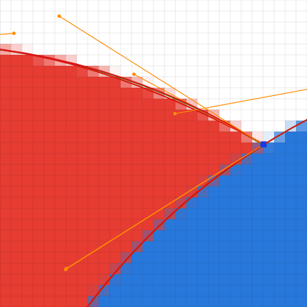 | ||||
| 05-color-transparent-hole DEF-GEO-001: transparent hole is a clean symmetric circle (4 cubics) 05-color-transparent-hole (rejected) | 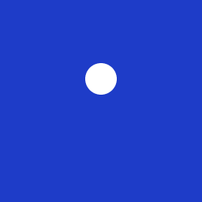 | 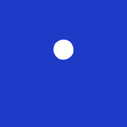 | 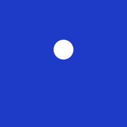 | 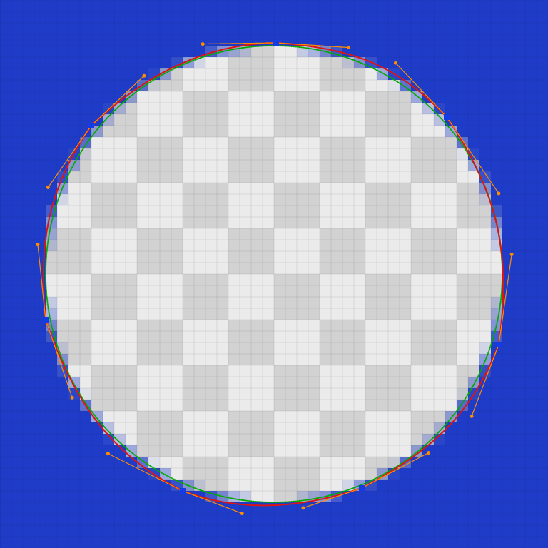 | 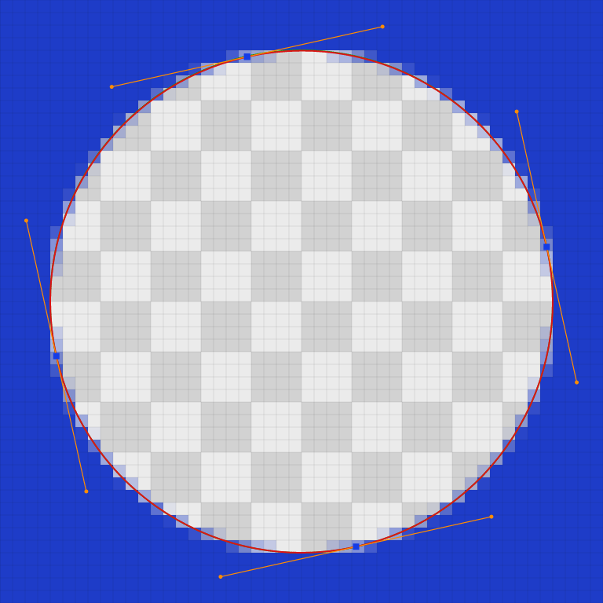 |
| 10-transparent-ring Transparent ring: both circles round, hole see-through ring-alpha (validation) | 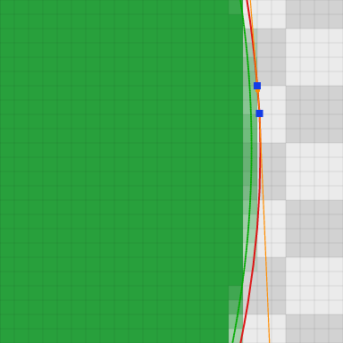 | 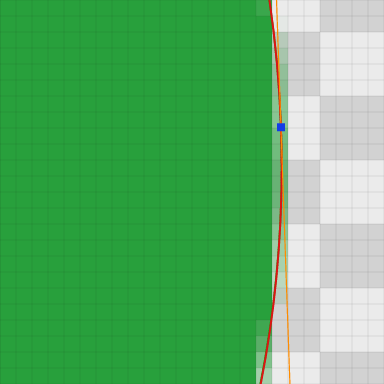 | |||
| 11-circle-r40 Standalone circle r=40 at a fractional centre circle-r40-frac (validation) | 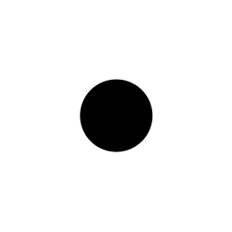 | 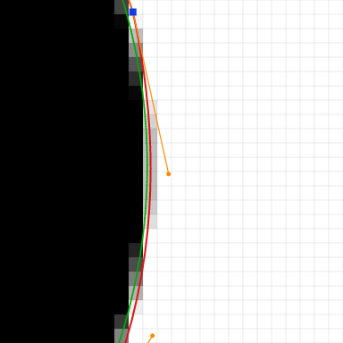 | 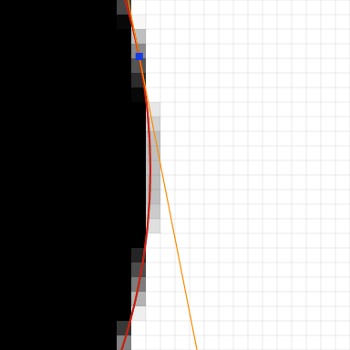 | ||
| 12-circle-r100 Large circle r=100 circle-r100 (validation) | 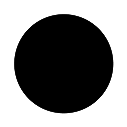 | 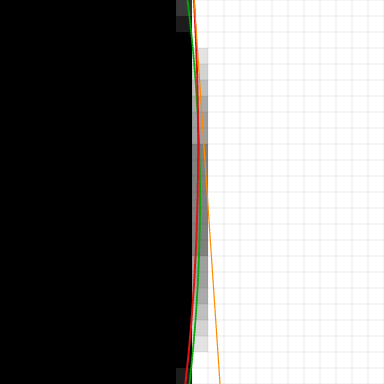 | 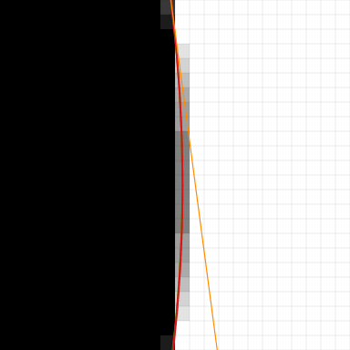 | ||
| 13-circle-r15.7 Small circle r=15.7 (held-out) h-circle-r15.7 (heldout) | 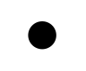 | 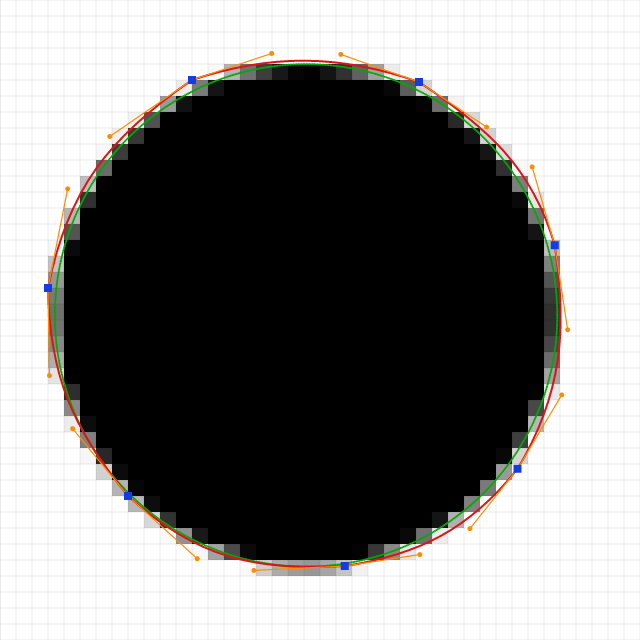 | 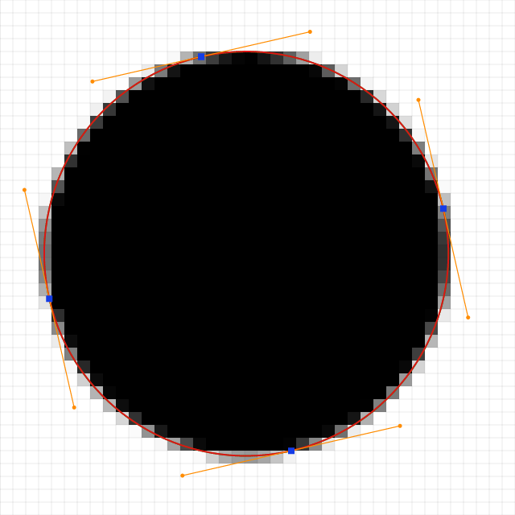 | ||
| 14-ellipse-4to1-rot30 Rotated 4:1 ellipse: smooth, even curvature, pointed ends not kinked ellipse-4to1-rot30 (validation) | 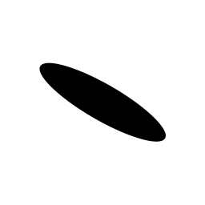 | 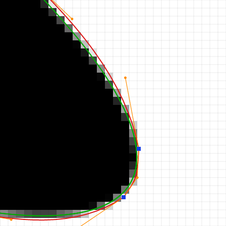 | 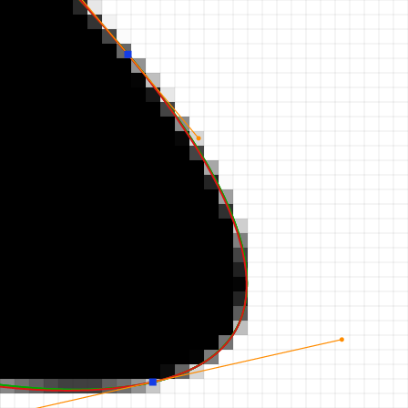 | ||
| 15-ellipse-3to1-rot63 Rotated 3:1 ellipse (held-out) h-ellipse-3to1-rot63 (heldout) | 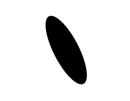 | 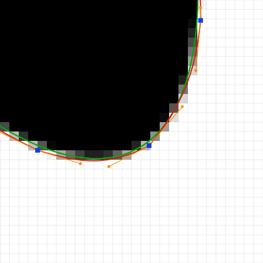 | 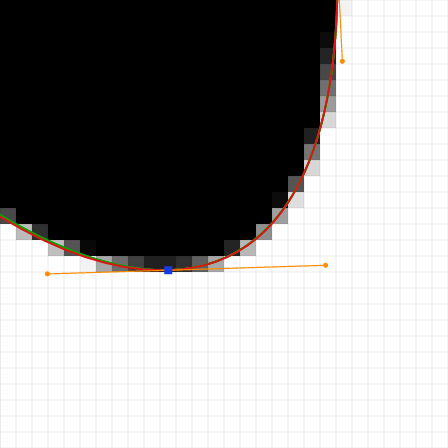 | ||
| 16-roundrect Rounded rectangle: straight sides are lines, corners are round roundrect (validation) | 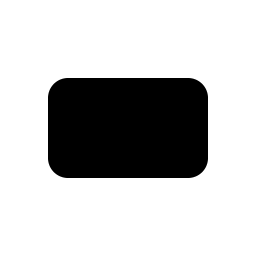 | 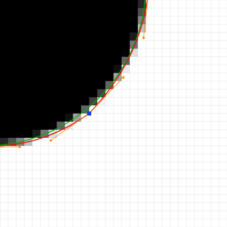 | 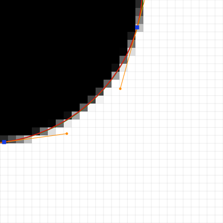 | ||
| 17-roundrect-rot12 Rotated rounded rectangle (held-out) h-roundrect-rot12 (heldout) | 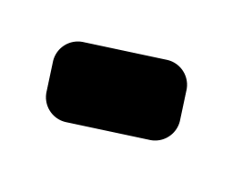 | 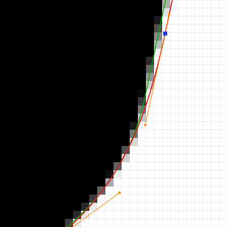 | 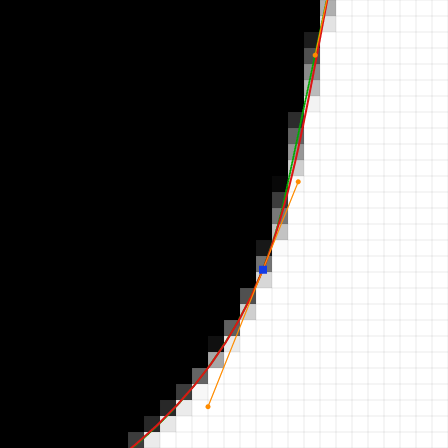 | ||
| 18-star Five-point star: straight edges, sharp tips star (validation) | 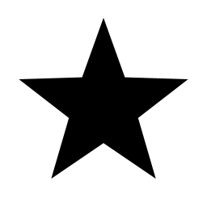 | 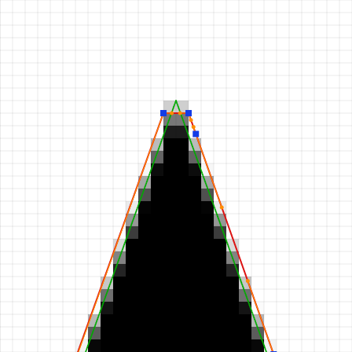 | 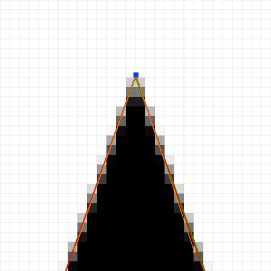 | ||
| 19-star-rot17 Rotated star (held-out) h-star-rot17 (heldout) | 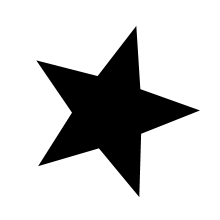 | 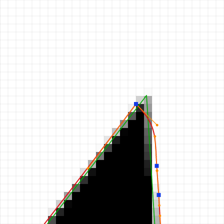 | 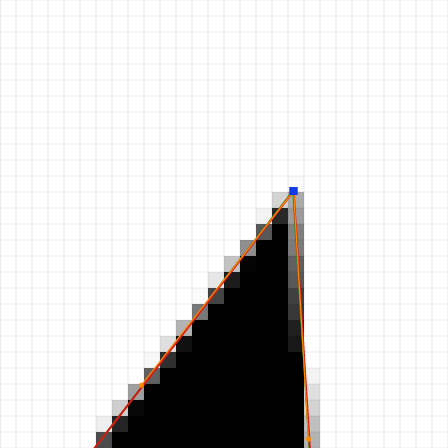 | ||
| 20-overlap-rect-disc-square Overlapping rectangle, disc and rotated square: shared edges, no gaps or slivers adjacent-overlap (validation) | 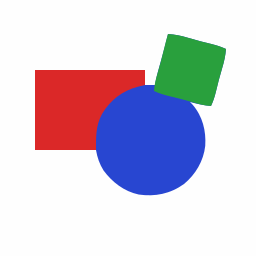 | 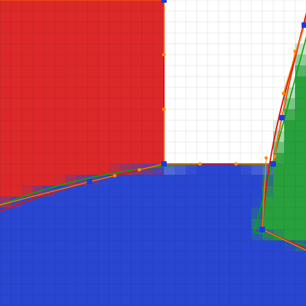 | 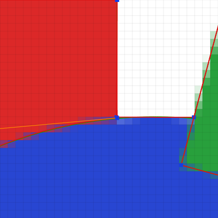 | ||
| 21-discs-three Three overlapping discs at other angles (held-out) h-discs-three (heldout) | 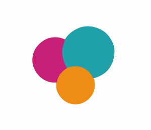 | 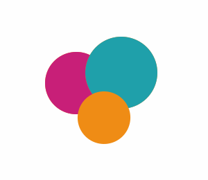 | 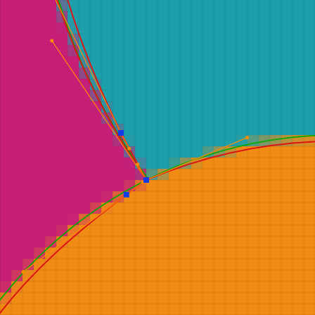 | 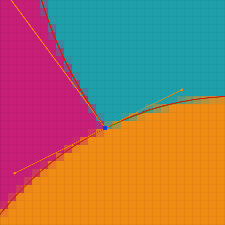 | |
| 22-discs-deep Deep overlap of two discs discs-two-deep (validation) | 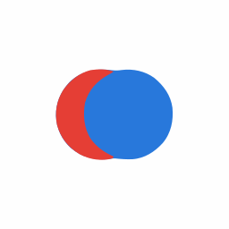 | 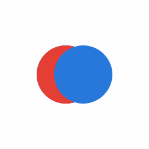 | 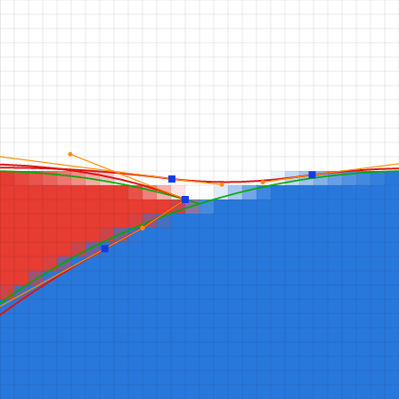 | 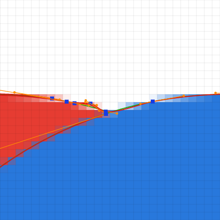 | |
| 30-hand-drawn-circle Negative control: the wobble must be kept, not made round hand-drawn-circle (negative) | 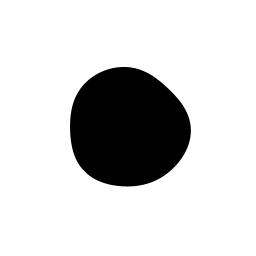 | 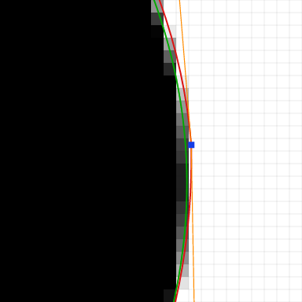 | 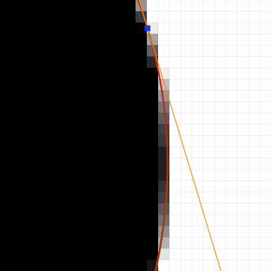 | ||
| 31-rough-ink Negative control: rough edge kept rough-ink (negative) | 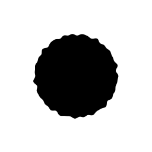 | ||||
| 32-organic-blob Negative control: organic silhouette kept organic-blob (negative) |